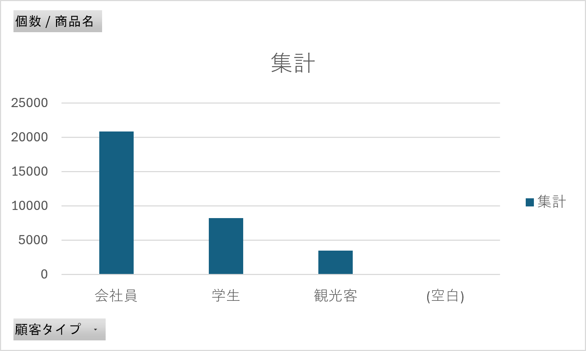
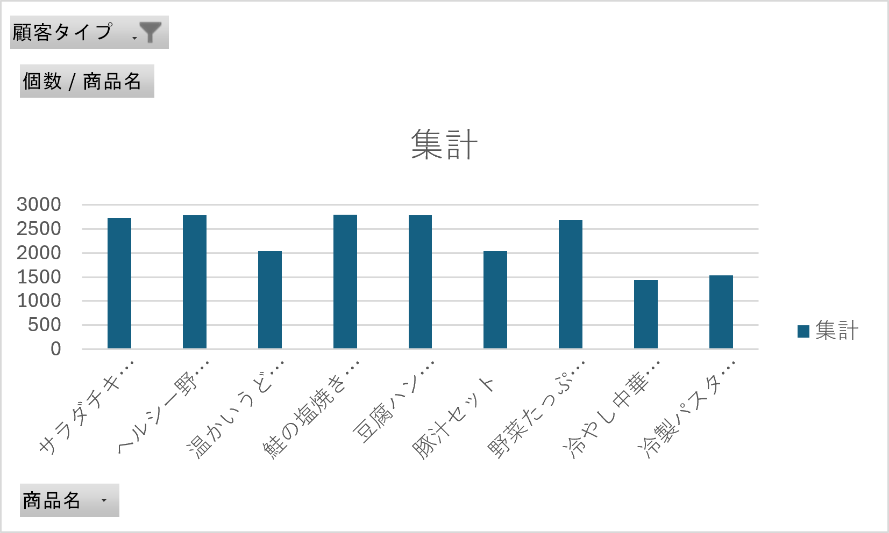
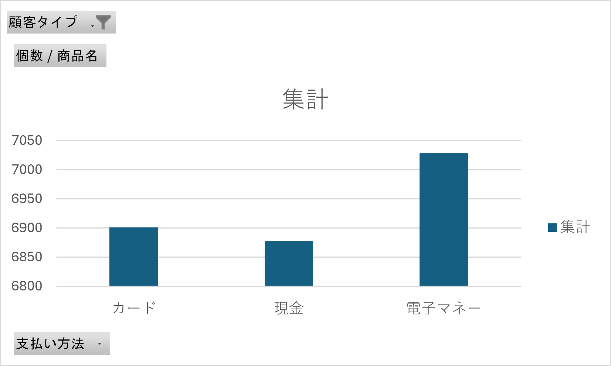
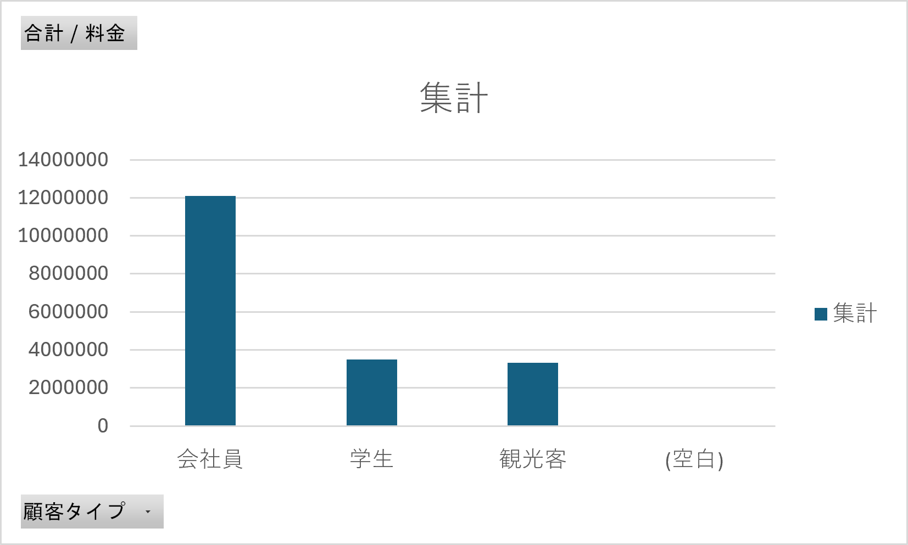

顧客タイプに注目し、購入数や人気商品、支払い方法などを比較して、 それぞれの購入傾向を調べました。
顧客タイプごとの商品購入数を比較しました。 観光客や地域住民など、どの顧客タイプの購入数が多いのか、 また少ないのかを調べ、主な購入者の特徴を分析します。

図1 顧客タイプ別の購入数
顧客タイプごとに、各お弁当の商品購入数を比較しました。 例えば、観光客と地域住民では、よく購入される商品に どのような違いがあるのかを調べます。

図2 顧客タイプ別の人気商品
顧客タイプごとに、現金・クレジットカード・電子マネーなどの 支払い方法の利用数を比較しました。 どの顧客タイプがどの支払い方法を多く利用しているのかを調べます。

図3 顧客タイプ別の支払い方法
顧客タイプごとの平均購入金額を比較しました。 観光客と地域住民などで、1回の購入に使う金額に どの程度の違いがあるのかを調べます。

図4 顧客タイプ別の平均購入金額